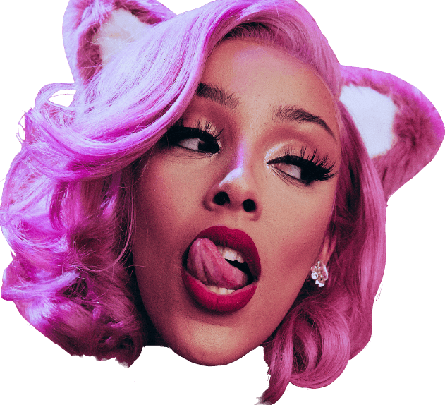
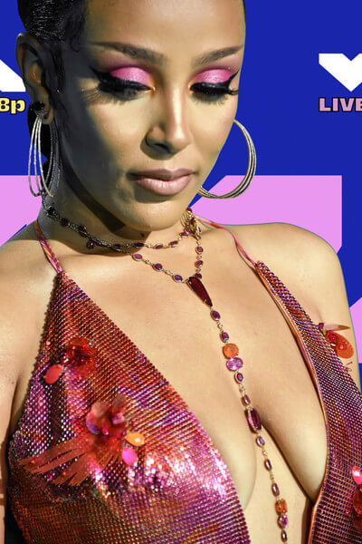

<!DOCTYPE html>
<html>
<link href="stylesheet.css" rel="stylesheet" type="text/css">
<meta name="viewport" content="width=device-width, initial-scale=1">

<head>
    <title>DojaCat Fashion</title>
    <link rel="icon" type="image/x-icon" href="webimg/favicon.png">
</head>

</html>

<body>
    <div class="topnav" id="myTopnav">
        <a href="Index.html">  </a>
        <a href="main.html">Home</a>
        <a href="music.html">Music</a>
        <a href="fashion.html">Fashion</a>
        <a href="forum.html">Forum</a>
        <a href="javascript:void(0);" class="icon" onclick="myFunction()">
            Menu
        </a>
    </div>
    <div id="cgt">
        <label class="Verdana" id="gt" for="Glitter">Let's Moo!</label>
        <input type="checkbox" id="Glitter" onclick="background()">
    </div>

    <div id="bigone">
        <div class="contx">
            <div class="pp">
                
            </div>
            <div class="pp">
                
            </div>
            <div class="pp">
                
            </div>
            <div class="pp">
                
            </div>

            <a class="bck" onclick="plus(-1)">&#10094;</a>
            <a class="nxt" onclick="plus(1)">&#10095;</a>

            <div class="aln">
                <div class="po">
                    
                </div>
                <div class="po">
                    
                </div>
                <div class="po">
                    
                </div>
                <div class="po">
                    
                </div>
            </div>

        </div>
    </div>
    <div class="words">
        <div class="wrd">
            <p>Doja Cat looked sizzling-hot in a red chainmail halter dress by <b>Versace</b> with a fringed hem at the
                2020 MTV VMAs.
                She teamed her sexy frock with metallic pink sandals by <b>Le Silla</b>.
            </p>
            <figure>  </figure>
            <p>She completed her bling with a pair of diamond hoop earrings.</p>
            <figure>  </figure>
            <p>She adorned her decolletage with a luxurious gemstone necklace.</p>
        </div>

        <div class="wrd">
            <p>Doja Cat stayed true to her name when she wore this kitty-themed ensemble to the 2019 BET Awards. Her
                strapless crochet gown by <b>The Blonds</b> was adorned with balls of yarn.</p>
            <figure>  </figure>
            <p>She pulled her look together with a silver cat purse by <b>Judith Leiber</b>.</p>
            <figure>  </figure>
            <p>She completed her outfit with a pair of pale pink pumps by <b>Stuart Weitzman</b>.</p>
        </div>

        <div class="wrd">
            <p>
                Doja Cat wore embellished gloves by <b>Givenchy</b> to match her dress at the 2020 MTV EMAs.</p>
            <figure>  </figure>

            <p>Doja Cat matched her dress with studded black pumps by <b>Givenchy</b>.


                <br>She paired the look with purple thigh-high boots and archive diamond jewelry from <b>Neil Lane
                    Couture</b>. As for her evening glam, Doja wore
                neutral-toned eye makeup with exaggerated winged-out liner, '90s-inspired cocoa-flushed cheeks, and a
                coordinating matte brown lip executed by makeup artist <b>Adam Burrell</b>.
            </p>
            <figure>  </figure>
        </div>

        <div class="wrd">
            <p>
                Doja switched into a tattered lace dress created by <B>Alan Nelson</B> in collaboration with <B>Tia
                    Usher</B><br>which
                she paired with wet slicked hair, heavy smoky eye makeup, and blue contacts.</p>
            <figure>  </figure>
            <p>During the set, Doja and
                her band appeared in a soft, lush field of daisies, juxtaposing the hard-rock rendition of her signature
                song <i>"Say So"</i>.
                <br>
                <video controls>

                    <source src="fashion/sayso.mp4" type="video/mp4">

                </video>
            </p>
        </div>
    </div>


    <footer class="foot">
        <p>Website Made by Line</p>
        <p>All Content is fully copyrighted by Doja Cat</p>
        <p>This is a pure Fan-Made Website with no intention of selling copyrighted content </p>
    </footer>


    <script src="functions.js"></script>
</body>

</html>